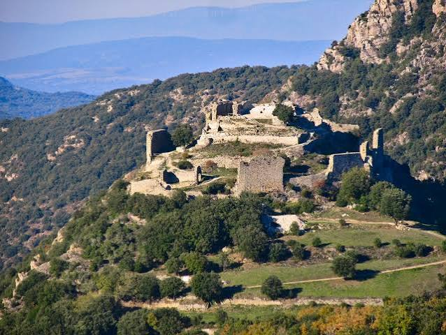

Château de
Termes


⟹ Châteaux & Patrimoine cathare ⟸
Dominant les gorges du Termenet, le château de Termes fut au début du XIIIe siècle le chef-lieu d'une puissante seigneurie des Corbières, vassale des Trencavel, vicomtes de Carcassonne, d'Albi et de Béziers. Son seigneur, Raymond de Termes, acquis à la cause cathare, en fait un foyer de résistance à la croisade contre les Albigeois.

En août 1210, Simon de Montfort, qui vient de s'emparer de Carcassonne et de Minerve, met le siège devant Termes avec une garnison adverse de quatre cents soldats et vingt chevaliers. Le siège, l'un des plus longs et des plus difficiles de la croisade, dure près de quatre mois : un été particulièrement sec assèche les citernes du château, mais un orage nocturne les remplit à nouveau au moment où Raymond s'apprêtait à se rendre. Affaiblie par la dysenterie, la garnison finit par céder en novembre 1210.
Confié par Simon de Montfort à son compagnon Alain de Roucy, le château devient ensuite forteresse royale, intégrée au dispositif défensif protégeant le royaume de France face à l'Aragon. Le fils de Raymond, Olivier de Termes, élevé dans la foi cathare, se rallie plus tard à la couronne et participe aux côtés de Saint Louis à la croisade en Terre sainte.
Aujourd'hui en ruine, le château de Termes fait partie, depuis le 26 juillet 2026, des huit sites inscrits au patrimoine mondial de l'UNESCO au titre des « Forteresses royales du Languedoc ».
Pour approfondir la lecture du monument, voici quelques repères historiques et architecturaux complémentaires.
Une forteresse plus ancienne qu’on ne le pense : Les recherches menées sur le site font remonter les premiers aménagements fortifiés vers le Xe siècle. La puissance des seigneurs de Termes s’affirme ensuite aux XIe et XIIe siècles, notamment dans un territoire où le contrôle des ressources et des voies de circulation joue un rôle essentiel.
Après le siège de 1210 : Le château ne cesse pas d’exister après la victoire de Simon de Montfort. Il passe définitivement sous contrôle royal en 1228, puis connaît à la fin du XIIIe et au début du XIVe siècle un vaste réaménagement : double enceinte, adaptation des défenses et installation durable d’une garnison chargée de surveiller la frontière.
Démantèlement et redécouverte : Devenu moins utile après le déplacement de la frontière, Termes est volontairement démantelé en 1653-1654 afin de le rendre militairement inutilisable. Racheté par la commune en 1989, le site fait depuis l’objet de consolidations, d’études et de fouilles qui renouvellent progressivement la compréhension du château seigneurial primitif.
Documentation complémentaire
Source de référence : consulter la ressource officielleChâteau de Villerouge-Termenès : à une vingtaine de minutes, lié au même terroir des Corbières.
Abbaye de Lagrasse : l'une des plus anciennes abbayes de France, accessible avec le pass 3 sites.
Village de Termes : et son église paroissiale édifiée dès 1163.
Massif des Corbières : et ses sentiers de randonnée entre garrigue et vignoble.